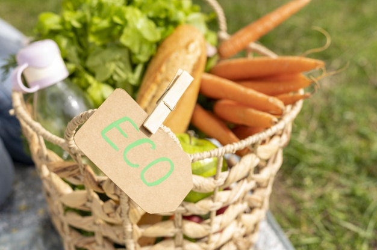

LA ECOLOGÍA Y SU IMPORTANCIA
La ecología es la ciencia que estudia a las relaciones entre los seres vivos y con el medio ambiente. Es muy importante porque le ha enseñado al ser humano a comprender y valorar su entorno, y a dimensionar cuánto impacto genera su accionar.



PRODUCTOS ECOLÓGICOS
| Producto | Material | Uso |
|---|---|---|
| popotes | Bambú | medio para tomar bebidas con popote sin dañar al ambiente |
| fibra | silicon | limpia y es mas segura al momento de capturar bacterias |
| pads | algodon | limpiadores reutilizables |